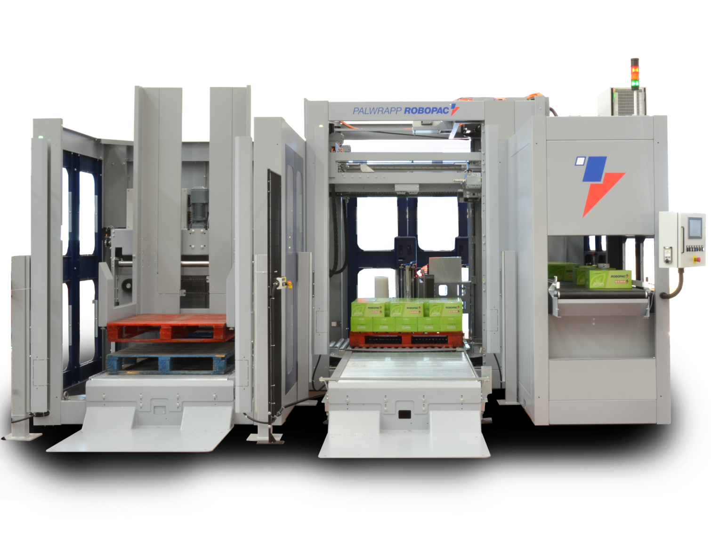

Palwrapp — kompaktowy i modułowy paletyzator
Palwrapp to rodzina kompaktowych, modułowych paletyzatorów producenta Robopac, przeznaczonych do automatycznego układania produktów na palecie w warstwach. Rozwiązanie sprawdza się w zakładach spożywczych, napojowych, FMCG oraz w logistyce, gdzie liczy się wydajność przy ograniczonej przestrzeni produkcyjnej.

Czym jest Palwrapp?
Palwrapp należy do grupy kompaktowych, modułowych paletyzatorów — maszyn zaprojektowanych tak, by zmieścić się w istniejącej linii produkcyjnej bez konieczności budowy dedykowanej hali czy rozbudowy infrastruktury.
Wszystkie warianty opierają się na wspólnych modułach funkcjonalnych i systemach ramowych, co ułatwia konfigurację, serwisowanie i późniejsze rozbudowy. Maszyna jest szczególnie dobrze dopasowana do produktów o płaskim spodzie — kartonów, tac, pojemników i opakowań typowych dla przemysłu spożywczego.
W odróżnieniu od dużych, stacjonarnych paletyzatorów portalowych, Palwrapp łączy niewielki ślad instalacyjny z pełną automatyzacją procesu układania warstw, w tym opcjonalnym owijaniem stretch i wstawianiem przekładek.
Dla kogo jest to rozwiązanie?
Palwrapp adresuje potrzeby zakładów, w których produkcja opiera się na opakowaniach o płaskim spodzie i wymaga regularnej, powtarzalnej paletyzacji bez angażowania dużej liczby operatorów.
Branże
Typowe zastosowania
- Paletyzacja tuż za linią rozlewniczą lub zgrzewarką
- Retrofit — uzupełnienie istniejącej linii o brakujący etap
- Nowy obiekt z ograniczonym metrażem hali produkcyjnej
- Produkcja wielu SKU z częstą zmianą formatu
Kluczowe parametry
Korzyści w praktyce
Co poszczególne cechy Palwrapp oznaczają w codziennym użytkowaniu — realne konsekwencje dla zakładu, nie hasła marketingowe.
Ślad instalacyjny Palwrapp jest znacznie mniejszy niż u tradycyjnych paletyzatorów wysokiego regału. Maszyna może stanowić naturalne przedłużenie linii produkcyjnej — np. tuż za zgrzewarką lub etykietarką — bez konieczności wydzielania osobnej strefy paletyzacji.
Modułowa konstrukcja pozwala dobrać podajnik, sposób podawania produktu i wariant wysokości palety do konkretnego procesu. Ta sama platforma sprzętowa obsługuje różne formaty opakowań — wystarczy zmiana programu na panelu operatorskim, bez przebudowy mechaniki.
Maszyna jest projektowana z myślą o szybkim uruchomieniu: podłączenie zasilania, skonfigurowanie kilku parametrów i start produkcji. Interfejs operatorski nie wymaga specjalistycznej wiedzy automatyki — zmiana formatu czy receptury warstwy odbywa się z poziomu ekranu dotykowego.
Przy produkcji wielu SKU na jednej linii operator nie musi ręcznie przekładać prowadnic ani przeprogramowywać sterownika PLC. System przechowuje receptury warstw — wybór formatu to kwestia kilku dotknięć, co skraca czas przezbrojenia między seriami.
Technologia Cube polega na precyzyjnym układaniu produktów w warstwach tak, by maksymalnie wykorzystać objętość palety — tworząc stabilny, „kubiczny" stos. W praktyce oznacza to mniej uszkodzeń transportowych, lepsze wykorzystanie przestrzeni magazynowej i kontenera oraz mniejsze zużycie folii stretch dzięki równym, prostokątnym ścianom palety.
Modele i warianty
Palwrapp dostępny jest w wersji w pełni automatycznej (z podajnikiem produktów) oraz półautomatycznej (operator podaje produkty ręcznie). Wybierz zakładkę, aby porównać parametry.
Palwrapp 3 Inline
Najwyższa wydajność- Podajnik
- Inline — produkty podawane w linii prostej
- Wys. palety
- do 2200 mm (3 warianty wysokości)
- Format palety
- 800 × 1200 mm / 1000 × 1200 mm
- Podawanie produktu
- Automatyczne, ciągłe z linii produkcyjnej
- Wydajność
- do 50 cykli/min · do 3 warstw/min
- Wymiary produktu
- min. 150 × 100 mm · max. 600 × 400 mm
Palwrapp 2 Inline
Kompaktowa konfiguracja- Podajnik
- Inline — kompaktowa konfiguracja dwurzędowa
- Wys. palety
- do 1800 mm (3 warianty wysokości)
- Format palety
- 800 × 1200 mm / 1000 × 1200 mm
- Podawanie produktu
- Automatyczne, z taśmociągu lub stołu zgrzewającego
- Wydajność
- do 40 cykli/min · do 2,5 warstwy/min
- Wymiary produktu
- min. 120 × 80 mm · max. 500 × 350 mm
Palwrapp 2 Sweep
Metoda sweep- Podajnik
- Sweep — produkty zbierane i przesuwane na paletę
- Wys. palety
- do 1800 mm (3 warianty wysokości)
- Format palety
- 800 × 1200 mm / 1000 × 1200 mm
- Podawanie produktu
- Automatyczne, metodą sweep (zamiatanie warstwy)
- Wydajność
- do 35 cykli/min · do 2 warstw/min
- Wymiary produktu
- min. 100 × 80 mm · max. 450 × 300 mm
Palwrapp Sweep Infeed
Półautomatyczny- Podajnik
- Sweep Infeed — ręczne podawanie, automatyczne układanie
- Wys. palety
- do 1800 mm (3 warianty wysokości)
- Format palety
- 800 × 1200 mm / 1000 × 1200 mm
- Podawanie produktu
- Półautomatyczne — operator układa produkty w strefie infeed
- Wydajność
- do 25 cykli/min · do 1,5 warstwy/min
- Wymiary produktu
- min. 100 × 80 mm · max. 450 × 300 mm
Wyposażenie standardowe
-
Elektronika najwyższej klasy
Sterownik PLC z ekranem dotykowym zapewnia stabilną pracę i łatwy dostęp do parametrów. Mniej nieplanowanych postojów i możliwość samodzielnej diagnostyki alarmów.
-
Napędy serwo
Silniki serwo kontrolują ruch osi układających z wysoką precyzją. Każda warstwa jest identyczna — kluczowe przy produktach wymagających stabilnego stosu.
-
Bezpieczeństwo kat. 3 PL(d)
Osłony i systemy bezpieczeństwa wg EN ISO 13849-1. Operator pracuje w bliskości maszyny bez narażenia na kontakt z elementami ruchomymi.
-
Prosty interfejs operatorski
Intuicyjny panel dotykowy — zmiana formatu, podgląd licznika warstw i historia alarmów bez szkolenia z automatyki przemysłowej.
Opcje dodatkowe
Moduły rozszerzające możliwości standardowej konfiguracji — warto rozważyć je już na etapie planowania linii.
Destacker unit
Automatyczne pobieranie pustych palet ze stosu — eliminuje ręczne odkładanie przez operatora.
Przekładki międzywarstwowe
Wstawianie kartonowych lub plastikowych przekładek między warstwami — stabilizacja stosu i ochrona opakowań.
Zintegrowana owijarka stretch
Owijanie folią bezpośrednio po układaniu — bez transportu do osobnego stanowiska.
Zdalne wsparcie R-Connect
Zdalny podgląd parametrów, diagnostyka i aktualizacja oprogramowania — krótszy czas reakcji serwisu.
3 warianty wysokości palety
Konfiguracja wysokości roboczej dostosowana do przestrzeni hali — bez zmiany logiki układania.
Waga warstwy do 350 kg
Wzmocniona rama i napędy do ciężkich produktów — np. zgrzewki multipacków z napojami.
Najczęściej zadawane pytania
Krótkie odpowiedzi na pytania, które najczęściej pojawiają się przy doborze i wdrożeniu Palwrapp.
Palwrapp to kompaktowy, modułowy paletyzator — zajmuje wyraźnie mniej miejsca niż stacjonarne maszyny portalowe. Można go ustawić jako przedłużenie istniejącej linii, bez budowy osobnej strefy paletyzacji.
Najlepiej sprawdza się przy opakowaniach o płaskim spodzie — kartonach, tacach i pojemnikach. Format palety to zwykle 800 × 1200 mm lub 1000 × 1200 mm, a wymiary produktu zależą od wybranego modelu (od ok. 100 × 80 mm do 600 × 400 mm).
W zależności od modelu i konfiguracji — do ok. 50 cykli na minutę i do ok. 3 warstw na minutę. Wersja półautomatyczna pracuje wolniej (do ok. 25 cykli/min), bo operator podaje produkty w strefie infeed.
Tak. Wersja automatyczna (m.in. Palwrapp 3 Inline, 2 Inline, 2 Sweep) pobiera produkty z linii. Wersja półautomatyczna (Sweep Infeed) wymaga ręcznego układania produktów w strefie infeed, a układanie warstw wykonuje maszyna.
Najczęściej: destacker pustych palet, przekładki międzywarstwowe, zintegrowaną owijarkę stretch, zdalne wsparcie R-Connect, warianty wysokości palety oraz wzmocnienie do warstw o wadze do 350 kg.
Wystarczy napisać, co pakujesz, jaki format opakowań stosujesz i jaką wydajność planujesz — wrócimy z propozycją modelu Palwrapp i układu linii. Kontakt: Spolex Sp. z o.o., tel. 22 351 71 91, biuro@spolex.com.
Paletyzator Palwrapp w pracy
Zobacz Palwrapp w akcji — prezentacja maszyny oraz case study wdrożenia u klienta.